First, we will install and load the necessary packages for this study. Additionally, we will load the required datasets. The analysis is based on three datasets:
Mortality: Downloaded from the World Health Organization, this is the primary dataset for the analysis. It contains the number of tuberculosis-related deaths in all countries. However, our study will focus solely on European countries.
Population: From this dataset, we will extract only the population variable. The source of this data is Our World in Data.
GDP per capita: Similar to the population dataset, we will extract only the gdp_per_capita variable. The source of this data is Data Bank.
First, we will define the criteria for dividing European countries into six distinct regions: North, South, West, East, Central, and the Balkans. The Balkans have been designated as a separate region due to their significant cultural differences from neighboring countries. We will add a new variable to the dataset that specifies the subregion to which each country belongs.
The map below shows the division that would be used from this point forward.
We are considering Greece as part of the Southern region due to the cultural differences with the Balkan countries. Now, we would choose a country to represent each European subregion. We will select five European countries to analyze their trends in the number of tuberculosis-related deaths. The selection criteria will ensure that the chosen countries represent different regions of Europe (e.g., North, South, etc.) while also having a sufficient number of time observations to construct a reliable time series. Additionally, we aim to include countries that exhibit distinct trends in tuberculosis mortality, making the study more insightful by allowing for a comparative analysis and accurate forecasting of different patterns.
As a first step, we will address any missing values (NA) in the dataset for the variable Number_Deaths in each selected country. We are going to choose countries that at least have 40 years with data.
country_name n
1 Netherlands 73
2 Iceland 72
3 Sweden 72
4 Denmark 71
5 France 71
6 Ireland 71
7 Spain 71
8 Switzerland 71
9 United Kingdom of Great Britain and Northern Ireland 71
10 Finland 70
11 Italy 70
12 Hungary 68
13 Austria 67
14 Belgium 67
15 Norway 66
16 Portugal 62
17 Poland 61
18 Greece 60
19 Romania 60
20 Bulgaria 58
21 Luxembourg 56
22 Malta 55
23 Latvia 42
24 Estonia 40
25 Lithuania 40
26 Russian Federation 40
Southern Europe. Due to the geographical origin of the authors, we will choose Spain as the representative country of this region.
Northern Europe. We observe that Iceland has 72 out of 74 years with recorded values for the selected variable, making it a suitable choice to represent the North region of Europe.
Western Europe. As Netherlands is the country with a greatest number of values, it would be our choice for this specific region.
Eastern Europe. It is noticeable that eastern countries are the ones with a less number of recorded values (most of them have only 40 or less); then, it would be a special region to analyse. Lithuania will represent the Northeast region, with 40 recorded values. Even though there are nearby countries with longer recorded periods, the tendency of Lithuania stands out among the rest, which will make for an interesting analysis.
Central Europe. Switzerland will be the representative country of the central region. It has 71 recorded values, that will fit perfectly when modeling the time series.
Balkans region. For the Balkans region, we have selected Romania, which has 60 recorded values. It will be an interesting case of analysis due to its tendency, that is a bit different as the other countries.
The selection criteria prioritize minimizing the number of missing values (NA) while ensuring a diverse representation of different regions in Europe. As we have discussed trends, let’s display the trend in tuberculosis-related deaths for the selected countries.
4 Data partitioning utilities
To standardize the modeling process across multiple countries, we define helper structures that facilitate consistent data handling. Specifically, we construct a country_splits hashmap to store the full, training, and testing datasets for each selected country.
The first step is to initialize this structure with the full dataset filtered by country and ordered by year:
Next, we define the specific number of years to allocate to the testing set for each country. These values were chosen based on the total number of available observations, ensuring approximately 15–20% of the series is reserved for out-of-sample evaluation.
Finally, we split the dataset for each country into a training and a testing subset based on the predefined test lengths. This setup is essential for subsequent model fitting and forecast evaluation.
In this section are presented the different methods for the ARIMA forecast. First of all, new functions to plot the ACF and PACF of the time series are defined, in order to get more visible plots (following the schema of python’s library matplt.lib).
custom_acf_plot <-function(ts_data, max_lag =25) { acf_vals <-acf(ts_data, plot =FALSE) acf_df <-with(acf_vals, data.frame(Lag = lag,ACF_value = acf )) conf <-qnorm(0.975) /sqrt(length(ts_data)) acf_df$UCL <- conf acf_df$LCL <--confggplot(acf_df, aes(x = Lag, y = ACF_value)) +geom_hline(yintercept =0, color ="#1f77b4") +geom_ribbon(aes(ymin = LCL, ymax = UCL), fill ="#1f77b4", alpha =0.2) +geom_segment(aes(xend = Lag, yend =0), color ="#1f77b4") +geom_point(size =1.5, color ="#1f77b4") +coord_cartesian(ylim =c(-0.5, 1.01)) +scale_y_continuous(breaks =seq(-0.5, 1.01, by =0.25)) +scale_x_continuous(breaks =seq(0, max_lag, by =2)) +theme_minimal() +theme(panel.grid =element_blank()) +labs(title ="", x ="Lag", y ="Value")}
custom_pacf_plot <-function(ts_data, max_lag =25) { pacf_vals <-pacf(ts_data, plot =FALSE) pacf_df <-with(pacf_vals, data.frame(Lag = lag,PACF_value = acf )) conf <-qnorm(0.975) /sqrt(length(ts_data)) pacf_df$UCL <- conf pacf_df$LCL <--confggplot(pacf_df, aes(x = Lag, y = PACF_value)) +geom_hline(yintercept =0, color ="#1f77b4") +geom_ribbon(aes(ymin = LCL, ymax = UCL), fill ="#1f77b4", alpha =0.2) +geom_segment(aes(xend = Lag, yend =0), color ="#1f77b4") +geom_point(size =1.5, color ="#1f77b4") +coord_cartesian(ylim =c(-0.5, 1.01)) +scale_y_continuous(breaks =seq(-0.5, 1.01, by =0.25)) +scale_x_continuous(breaks =seq(0, max_lag, by =2)) +theme_minimal() +theme(panel.grid =element_blank()) +labs(title ="", x ="Lag", y ="Value")}
Then, a function to automate the selection of ARIMA models is created. This function systematically evaluates various parameter combinations and reports their corresponding Akaike Information Criterion (AIC) values. This approach allows for an informed and reproducible model selection process, particularly useful when the number of possible \((p,d,q)\) combinations is large and exhaustive testing is impractical.
try_all_arima <-function(ar_coef, d_coef, ma_coef, time_series) {for (p in ar_coef) {for(d in d_coef) {for (q in ma_coef) { arima_fit <-Arima(time_series, order =c(p, d, q))cat("ARIMA(", p, ",", d,"," ,q, ")\n", sep ="")print(arima_fit$coef)cat("AIC:", AIC(arima_fit), "\n\n") } } }}
This function iterates over all specified combinations of autoregressive, differencing, and moving average orders. For each configuration, it fits an ARIMA model and outputs the estimated parameters along with the AIC value, which serves as the model selection criterion.
Next, we define the get_length function to facilitate quick retrieval of the number of non-missing observations in a specified dataset. Accessing time series lengths manually for each country and subset (full, train, or test) can be cumbersome and error-prone. This utility function simplifies the process by requiring only the country name, the desired subset, and the target variable. It returns the number of valid (non-NA) entries.
Now, we begin with the core functions defined for the rolling forecast methodology. We begin by defining a model constructor called fitting_function(); it takes ARIMA orders \((p,d,q)\) as input and returns a function that fits a model with those parameters to any given time series.
The core of the forecasting mechanism is implemented in the function rolling_forecast().
This function simulates a real-time prediction scenario by iteratively refitting the model to an expanding training set. At each iteration, it fits the model to the currently available data and generates forecasts up to a specified horizon (e.g., 1, 3, and 5 years ahead). These predictions are stored in a matrix with dimensions corresponding to the length of the test set and the number of horizons. Importantly, the function only retains the forecasted values that correspond to actual future observations in the test set, ensuring a fair comparison. The following table shows the main idea of the function:
To visualize the model behavior at different forecast horizons, the function make_horizon_plots() creates a series of time series plots. It takes as input the training and testing series, along with two fitting functions (one for the manually specified model and another using auto.arima()), and returns separate plots for each forecast horizon (1, 3, and 5 years). In each plot, the actual data are shown in the original scale, alongside the predictions from both models.
In addition to visual inspection, we provide quantitative tools to assess forecast accuracy. The function compute_accuracy_table() computes key performance metrics such as Mean Error (ME), Root Mean Squared Error (RMSE), Mean Absolute Error (MAE), Mean Percentage Error (MPE) and Mean Absolute Percentage Error (MAPE).
In this section, we analyze the temporal dynamics of tuberculosis-related mortality across the selected European countries using ARIMA models. Each country will be studied individually, beginning with an exploratory analysis of the log-transformed mortality data. Model parameters (p,d,q) will be selected based on empirical diagnostics such as the ACF/PACF plots and the AIC. The adequacy of each model will be verified through residual analysis.
6.1 Spain
We begin our analysis with the Spanish dataset, which spans from 1951 to 2021 and comprises 71 annual observations. Given the long time span and the observed declining trend in raw counts, a logarithmic transformation is applied to stabilize variance and linearize the trend. The figure below shows the log-transformed training time series for tuberculosis mortality in Spain.
In order to formally assess whether the series is stationary, we apply the Augmented Dickey-Fuller (ADF) test:
Augmented Dickey-Fuller Test
data: train_spain
Dickey-Fuller = 0.097996, Lag order = 3, p-value = 0.99
alternative hypothesis: stationary
As expected, the high \(p\)-value indicates that we fail to reject the null hypothesis, which suggests that the series is non-stationary. In this case, applying a first-order difference is recommended.
We can apply the ADF test to the differenced time series:
Augmented Dickey-Fuller Test
data: train_spain %>% diff()
Dickey-Fuller = -4.729, Lag order = 3, p-value = 0.01
alternative hypothesis: stationary
The test \(p\)-value ensures the stationarity of the time series. Now, we check the ACF and PACF of the differenced time series:
Neither the ACF nor the PACF show any ignificant spikes—autocorrelations at higher lags lie well within the confidence bounds. This suggest that the series present no AR or MA structure left after the differences. We first fit the auto.arima model:
Series: train_spain
ARIMA(0,1,0) with drift
Coefficients:
drift
-0.0712
s.e. 0.0125
sigma^2 = 0.009433: log likelihood = 54.37
AIC=-104.73 AICc=-104.52 BIC=-100.58
Training set error measures:
ME RMSE MAE MPE MAPE MASE
Training set 0.0001707495 0.09549223 0.06505728 0.05485524 0.8823353 0.7573006
ACF1
Training set -0.03232898
The auto.arima() procedure suggests an ARIMA(0,1,0) specification, indicating that the series follows a random walk without drift. The corresponding AIC is relatively low (\(-104.73\)), supporting the adequacy of this simple model. Moreover, the in-sample performance is satisfactory, with a root mean squared error (RMSE) of \(0.096\) and a mean absolute percentage error (MAPE) below 1% on the log-transformed training set.
Nonetheless, in pursuit of a potentially more flexible and interpretable model, we consider a broader set of ARIMA specifications that include either an AR(1) or MA(1) component. This aims to assess whether a slightly more complex model can better capture the underlying dynamics, or whether the series can indeed be sufficiently described as a random walk process.
We apply the try_all_arima using \(p,q \in \{0,1\}\):
The model with the lowest AIC (specifically, with a value of \(-100.25\)) is the ARIMA(\(1,1,1\)). We proceed with the residuals diagnostics of both models.
Series: train_spain
ARIMA(1,1,1)
Coefficients:
ar1 ma1
0.9949 -0.9065
s.e. 0.0097 0.0825
sigma^2 = 0.009734: log likelihood = 53.12
AIC=-100.25 AICc=-99.81 BIC=-94.01
Training set error measures:
ME RMSE MAE MPE MAPE MASE
Training set 0.01508809 0.09616155 0.07162376 0.1940579 0.9526722 0.8337379
ACF1
Training set -0.1306316
First, the auto.arima:
Ljung-Box test
data: Residuals from ARIMA(0,1,0) with drift
Q* = 3.1727, df = 10, p-value = 0.9771
Model df: 0. Total lags used: 10
Shapiro-Wilk normality test
data: residuals(fit_spain_auto)
W = 0.88078, p-value = 2.812e-05
Just by checking the residuals distribution function on the checkresiduals plot, it is clear that the residuals of the autogenerated model do not pass the Shapiro-Wilk normality test.
Then, the residuals of the manual model:
Ljung-Box test
data: Residuals from ARIMA(1,1,1)
Q* = 5.2251, df = 8, p-value = 0.7333
Model df: 2. Total lags used: 10
Shapiro-Wilk normality test
data: residuals(fit_spain_111)
W = 0.93669, p-value = 0.00386
The residuals of the manual model do not pass neither the normality assumption. However, we proceed with the forecasting step.
The manual ARIMA model consistently outperforms the automatic specification across all horizons. In particular, it achieves substantially lower RMSE and MAE values, especially for medium- and long-term forecasts. For example, at horizon \(h=5\), the manual model yields an RMSE of 36.88 and a MAPE of 11.65%, whereas the automatic model reaches 78.31 and 31.49%, respectively. Moreover, the manual model maintains smaller forecast biases (ME) across horizons, suggesting a more balanced and accurate predictive behavior.
Now, we can plot the forecasting results:
$h1
$h3
$h5
Notably, both models tend to slightly overestimate the first forecasted value. Across all three horizons, the manual ARIMA provides more accurate approximations than the automatically selected model. This is particularly evident in the five-step-ahead forecasts, where the autoARIMA overpredicts by up to 50 tuberculosis-related deaths.
6.2 The Netherlands
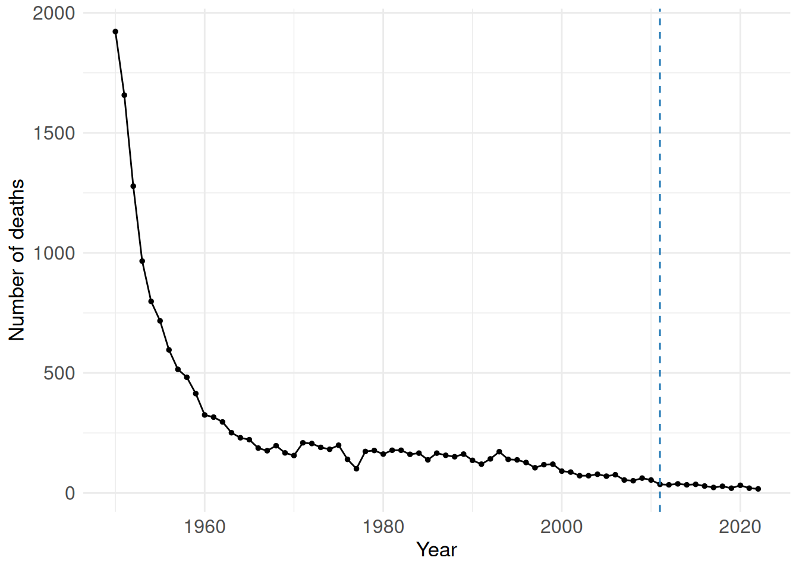
In order to select the model, first, we study the order of differences needed to ensure stationarity.
Augmented Dickey-Fuller Test
data: train_netherlands %>% diff()
Dickey-Fuller = -3.9401, Lag order = 3, p-value = 0.01832
alternative hypothesis: stationary
The series need a first order difference to get stationary. We check the ACF and PACF plots:
After apply a first order difference, the series ACF plot (first) shows a significant spike at lag 3, and the PACF plot shows significant spikes at lags 3 and 7.
Let’s see which model suggests the auto.arima function:
Series: train_netherlands
ARIMA(0,0,5) with non-zero mean
Coefficients:
ma1 ma2 ma3 ma4 ma5 mean
1.5353 1.5598 1.5961 1.0715 0.3912 5.2624
s.e. 0.1205 0.1772 0.1866 0.1755 0.1135 0.1849
sigma^2 = 0.04844: log likelihood = 6.62
AIC=0.76 AICc=2.87 BIC=15.53
Training set error measures:
ME RMSE MAE MPE MAPE MASE
Training set -0.01663869 0.2089804 0.1552186 -0.6530894 3.023355 1.143404
ACF1
Training set -0.06522102
The auto generated model is the ARIMA(0,0,5), meaning no differences are required. For the manual model, we apply the try_all_arima function
The best model, which minimizes the AIC (\(-54.25\)) is the ARIMA(1,1,3). We now check the assumptions on the residuals of the both models.
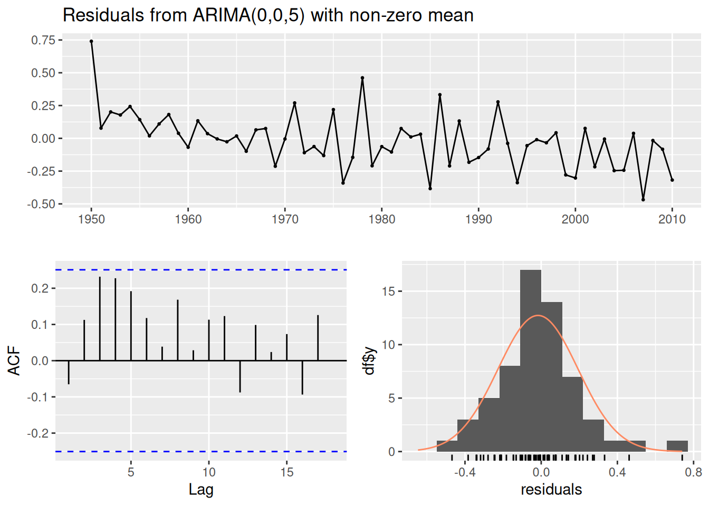
Ljung-Box test
data: Residuals from ARIMA(0,0,5) with non-zero mean
Q* = 14.839, df = 5, p-value = 0.01107
Model df: 5. Total lags used: 10
Shapiro-Wilk normality test
data: residuals(fit_netherlands_auto)
W = 0.96665, p-value = 0.09472
The residuals for the autogenerate model do not satisfy the hypothesis.
Series: train_netherlands
ARIMA(1,1,3)
Coefficients:
ar1 ma1 ma2 ma3
0.9631 -1.1488 -0.3513 0.7221
s.e. 0.0342 0.1632 0.1880 0.1398
sigma^2 = 0.0191: log likelihood = 32.13
AIC=-54.25 AICc=-53.14 BIC=-43.78
Training set error measures:
ME RMSE MAE MPE MAPE MASE
Training set -0.002281969 0.1324053 0.103887 -0.043115 2.07381 0.7652745
ACF1
Training set 0.0005772235
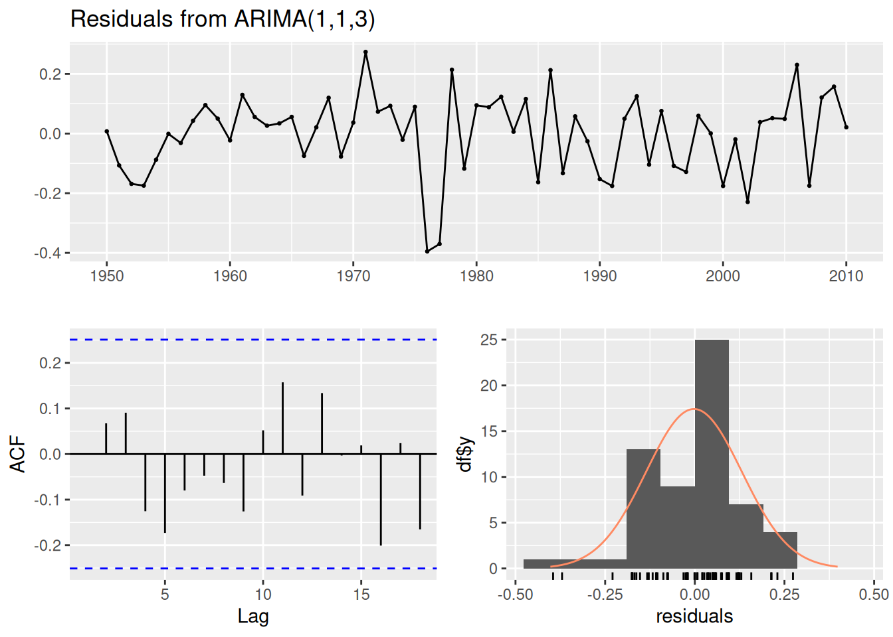
Ljung-Box test
data: Residuals from ARIMA(1,1,3)
Q* = 6.2261, df = 6, p-value = 0.3983
Model df: 4. Total lags used: 10
Shapiro-Wilk normality test
data: residuals(fit_netherlands_113)
W = 0.95991, p-value = 0.0437
On the contrary, the residuals of the manual model satisfy the no autocorrelation assumption, however, the normality is not ensured (\(p\)-value of \(0.04\)). We begin the forecast step:
The auto.arima model is clearly inadequate for this series: the large ME values reveal a systematic tendency to over-forecast, and the three- and five-step MAPE values exceed 200 %, signalling a very poor fit. By contrast, the manually specified model yields much smaller error metrics and appears to capture the underlying trend of the series.
6.3 Switzerland
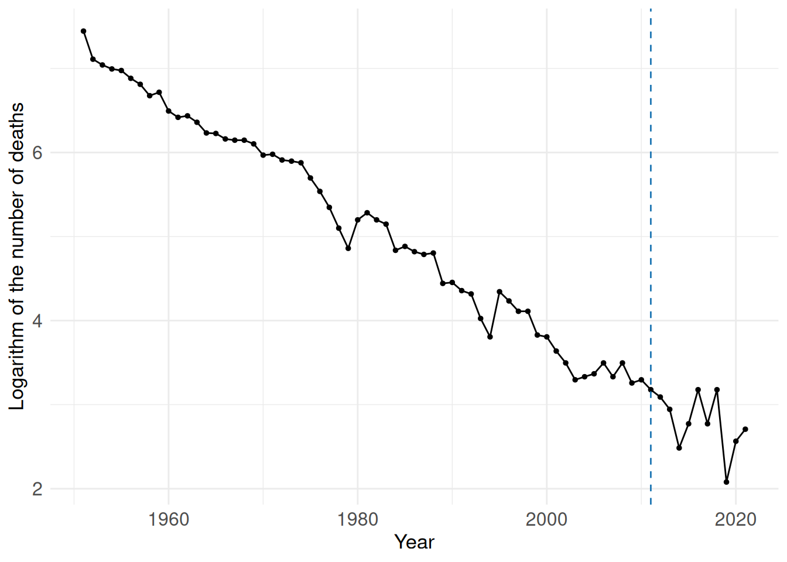
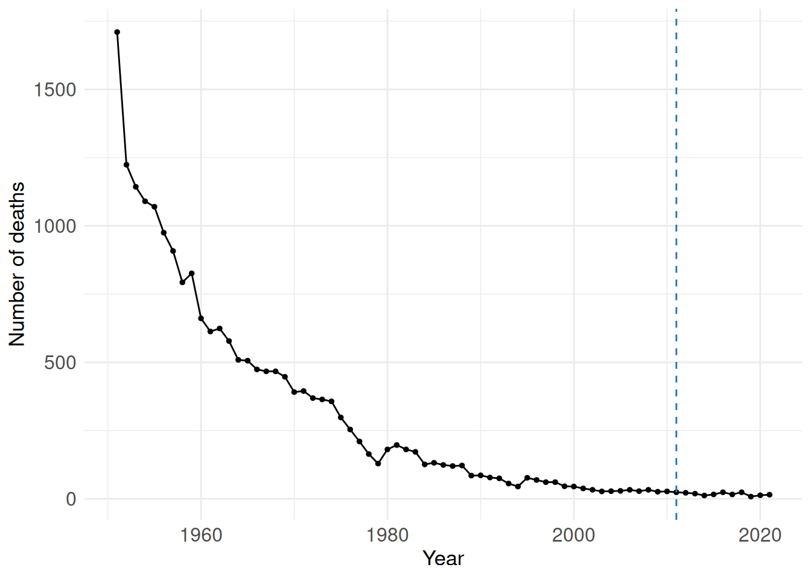
We check the stationary of the series:
Augmented Dickey-Fuller Test
data: train_switzerland
Dickey-Fuller = -3.9644, Lag order = 3, p-value = 0.01725
alternative hypothesis: stationary
KPSS Test for Level Stationarity
data: train_switzerland
KPSS Level = 1.5938, Truncation lag parameter = 3, p-value = 0.01
Notably, the series passes the ADF test without differencing, suggesting stationarity. However, the visual inspection reveals a clear downward trend, which contradicts this result and raises concerns about potential non-stationarity. To clarify this discrepancy, we applied the KPSS test, which assumes stationarity as the null hypothesis. The KPSS result (\(p\)-value of \(0.01\)) leads us to reject stationarity, thereby supporting the use of first-order differencing before model fitting.
Next, we check the ACF and PACF of the first order differenced time series.
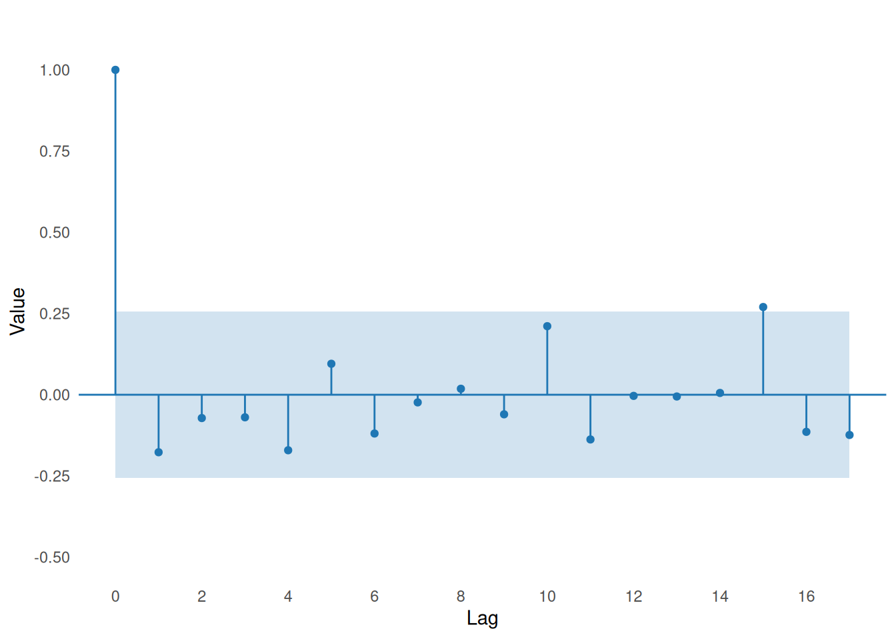
The series, after a first difference, does not present any temporal structure left. We check the auto.arima function:
Series: train_switzerland
ARIMA(0,1,1) with drift
Coefficients:
ma1 drift
-0.2622 -0.0695
s.e. 0.1671 0.0141
sigma^2 = 0.02193: log likelihood = 29.96
AIC=-53.91 AICc=-53.48 BIC=-47.68
Training set error measures:
ME RMSE MAE MPE MAPE MASE
Training set -0.001179008 0.1443274 0.1039542 -0.01669039 2.261343 0.8563823
ACF1
Training set 0.04579578
The selected model of the auto.arima function is ARIMA(0,1,1). Then, for the manual model, as the series seems to behave as a \(0,1,0\) (random walk), we apply the try_all_arima in order to study if another model should present better performance.
Series: train_switzerland
ARIMA(1,1,1)
Coefficients:
ar1 ma1
0.9998 -0.9916
s.e. 0.0009 0.0203
sigma^2 = 0.02355: log likelihood = 26.84
AIC=-47.67 AICc=-47.24 BIC=-41.44
Training set error measures:
ME RMSE MAE MPE MAPE MASE
Training set -0.006518849 0.149589 0.1046295 -0.1116054 2.302596 0.8619455
ACF1
Training set -0.1749837
Now it is time to check the residuals diagnostics of both models, beginning with the automatic one:
Ljung-Box test
data: Residuals from ARIMA(0,1,1) with drift
Q* = 8.4678, df = 9, p-value = 0.4878
Model df: 1. Total lags used: 10
Shapiro-Wilk normality test
data: residuals(fit_switzerland_auto)
W = 0.92632, p-value = 0.001392
The residuals for the autogenerate model do not satisfy the normality hypothesis.
Ljung-Box test
data: Residuals from ARIMA(1,1,1)
Q* = 9.3313, df = 8, p-value = 0.3151
Model df: 2. Total lags used: 10
Shapiro-Wilk normality test
data: residuals(fit_switzerland_111)
W = 0.91379, p-value = 0.0004353
Neither the residuals of the manually selected model seem to distribute normally. We begin the forecast step
Although any of both models ensures the normality of residuals, both models present quite well-fitted model features; however, the manual model seems to outperform in all three forecast horizons.
6.4 Sweden
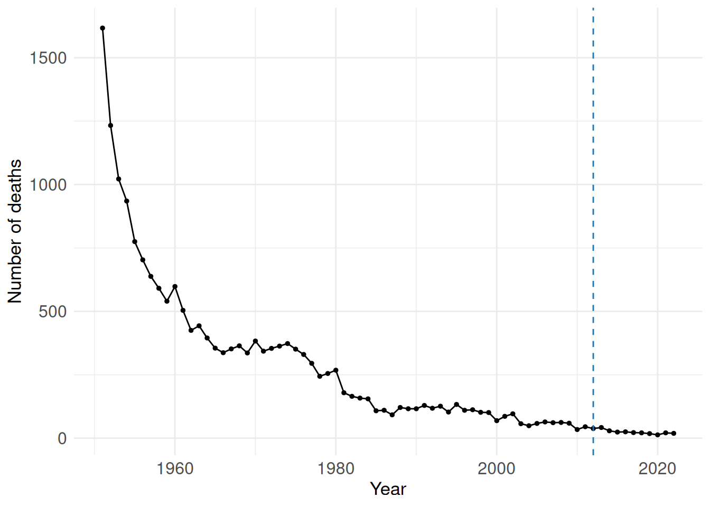
We check first the order of differences required to ensure stationarity:
Augmented Dickey-Fuller Test
data: train_sweden %>% diff()
Dickey-Fuller = -3.6087, Lag order = 3, p-value = 0.04007
alternative hypothesis: stationary
We need to difference the series once to ensure stationarity. Now, we check the ACF and PACF of the differenced time series:
The ACF and PACF show significant spikes at lag 8, both. However, a simpler model should also be studied. First, let’s check which is the auto.arima model selected:
Series: train_sweden
ARIMA(0,1,1) with drift
Coefficients:
ma1 drift
-0.3354 -0.0592
s.e. 0.1217 0.0138
sigma^2 = 0.02624: log likelihood = 25.04
AIC=-44.08 AICc=-43.65 BIC=-37.8
Training set error measures:
ME RMSE MAE MPE MAPE MASE
Training set -0.001665523 0.1579452 0.1234212 -0.05052666 2.540635 0.9369797
ACF1
Training set 0.01103397
The auto generated model is the ARIMA(0,1,1), with an AIC of \(-44.08\). Now, we study the manual model:
The model that minimizes the AIC is ARIMA(1,1,1), meaning the series depends on eight past values and adds a moving average component.
Series: train_sweden
ARIMA(1,1,1)
Coefficients:
ar1 ma1
0.9996 -0.9912
s.e. 0.0021 0.0242
sigma^2 = 0.02975: log likelihood = 20.56
AIC=-35.12 AICc=-34.69 BIC=-28.84
Training set error measures:
ME RMSE MAE MPE MAPE MASE
Training set -0.007107134 0.1681944 0.1223335 -0.1567237 2.541821 0.9287218
ACF1
Training set -0.2543212
We need to further check the residuals of both models.
Ljung-Box test
data: Residuals from ARIMA(0,1,1) with drift
Q* = 10.946, df = 9, p-value = 0.2795
Model df: 1. Total lags used: 10
Shapiro-Wilk normality test
data: residuals(fit_sweden_auto)
W = 0.96871, p-value = 0.1201
The residuals for the autogenerate model satisfy both assumptions. Now, we check the manual model:
Ljung-Box test
data: Residuals from ARIMA(1,1,1)
Q* = 19.439, df = 8, p-value = 0.01268
Model df: 2. Total lags used: 10
Shapiro-Wilk normality test
data: residuals(fit_sweden_111)
W = 0.95384, p-value = 0.02204
As the residuals do not ensure the no autocorrelation assumption, a new model should be applied. We study a higher order parameters:
The auto.arima model seems to outperform the manual one in the one-step-ahead forecasts, in both accuracy metrics and visual forecasts. However, as the horizon increases, the manual one seems to outperform the auto.arima selected model.
6.5 Bulgaria
Now, we study Bulgaria data. As seen in the introduction, Bulgaria has a different trend for number_deaths series.
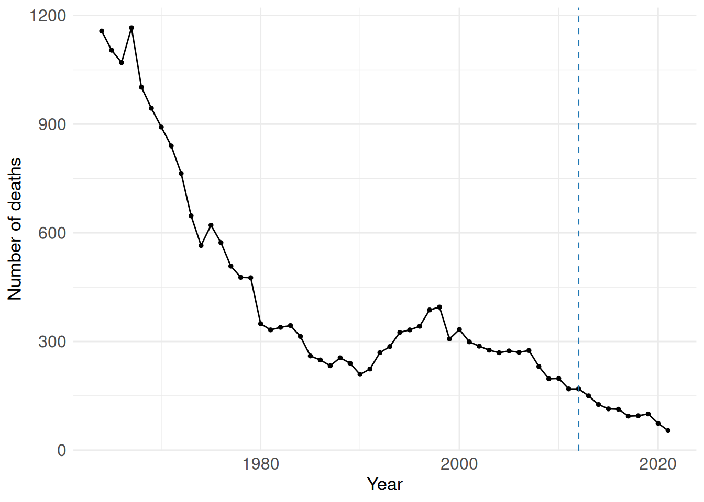
We first use the ADF test to assess whether the series is stationary or not.
Augmented Dickey-Fuller Test
data: train_bulgaria
Dickey-Fuller = -2.1424, Lag order = 3, p-value = 0.5173
alternative hypothesis: stationary
Without any difference, the series is not stationary. After two differences, we get stationarity.
Augmented Dickey-Fuller Test
data: train_bulgaria %>% diff(differences = 2)
Dickey-Fuller = -5.4371, Lag order = 3, p-value = 0.01
alternative hypothesis: stationary
Let’s see which ARIMA order proposes the auto.arima() function.
Series: train_bulgaria
ARIMA(0,1,0) with drift
Coefficients:
drift
-0.0409
s.e. 0.0147
sigma^2 = 0.01038: log likelihood = 41.16
AIC=-78.32 AICc=-78.05 BIC=-74.62
Training set error measures:
ME RMSE MAE MPE MAPE MASE
Training set 0.0001478023 0.09973848 0.07737386 0.001195524 1.32575 0.8967336
ACF1
Training set 0.07537416
The model proposed is an ARIMA(0,1,0) with drift, that has an AIC of \(-78.32\). In order to determine an alternative model, we check the ACF and PACF plots of the time series.
First, we check the ACF and PACF of the first-order differences:
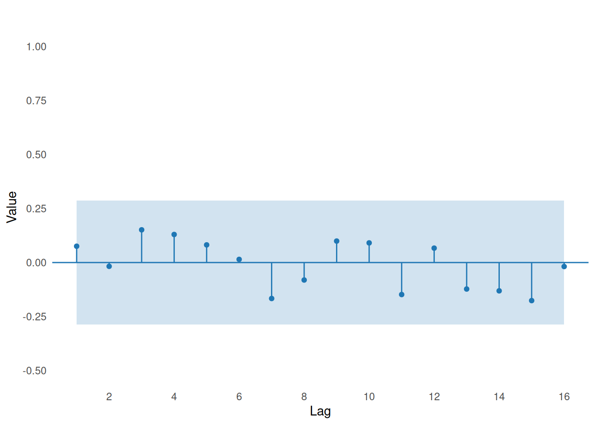
After one difference, the series does not present any structure left, justifying the selection criteria of the auto.arima function. Now, we check the two-order differences ACF and PACF:
The ACF now shows a single first significant lag, whether the PACF shows an increasing pattern over the first few lags. Now, we apply the try_all_arima to find the best model:
The model with the lowest AIC (of \(-72.35\)) is ARIMA(\(0,2,1\)). Now, we check the residuals diagnostic of both models:
Series: train_bulgaria
ARIMA(0,2,1)
Coefficients:
ma1
-0.8574
s.e. 0.1229
sigma^2 = 0.01106: log likelihood = 38.18
AIC=-72.35 AICc=-72.08 BIC=-68.7
Training set error measures:
ME RMSE MAE MPE MAPE MASE
Training set -0.002789192 0.1018244 0.07529418 -0.04991614 1.293325 0.872631
ACF1
Training set -0.01556096
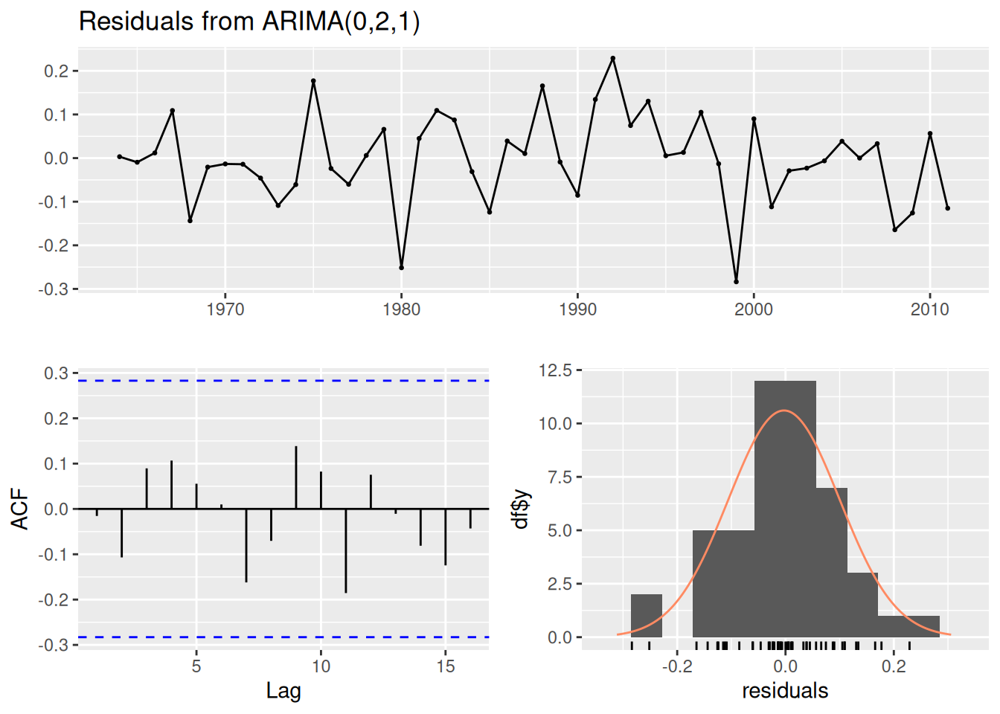
Ljung-Box test
data: Residuals from ARIMA(0,2,1)
Q* = 5.2802, df = 9, p-value = 0.8092
Model df: 1. Total lags used: 10
Shapiro-Wilk normality test
data: residuals(fit_bulgaria_021)
W = 0.97709, p-value = 0.4641
Ljung-Box test
data: Residuals from ARIMA(0,1,0) with drift
Q* = 5.4184, df = 10, p-value = 0.8615
Model df: 0. Total lags used: 10
Shapiro-Wilk normality test
data: residuals(fit_bulgaria_auto)
W = 0.98861, p-value = 0.9188
The residuals of both models satisfy the assumptions on residuals. We begin the forecast step by checking the accuracy metrics of both models.
In all forecast horizons considered, the manually specified ARIMA models outperformed their automated counterparts, showing lower overall errors and less systematic over-forecasting. The negative mean error values across models indicate a consistent tendency to overestimate tuberculosis deaths, but this bias was less pronounced in the manual models (e.g., –9.2 vs –11.5 at h = 1; –48.4 vs –51.8 at h = 5). RMSE and MAE were also smaller for manual models at every horizon (e.g., RMSE 15.0 → 51.4 vs 16.0 → 54.1; MAE 12.5 → 48.4 vs 12.7 → 51.8). Likewise, MAPE increased with forecast horizon but remained consistently lower for the manual model, staying below 35% through h = 3 and rising more gradually by h = 5 (59.2% vs 62.8%).
$h1
$h3
$h5
6.6 Estonia
Finally, Estonia is studied.
Let’s see which model is suggested by the auto.arima function:
Series: train_estonia
ARIMA(0,1,0)
sigma^2 = 0.06583: log likelihood = -1.76
AIC=5.52 AICc=5.66 BIC=6.92
Training set error measures:
ME RMSE MAE MPE MAPE MASE
Training set 0.00204631 0.2523997 0.1741485 -0.1289093 4.029889 0.9685663
ACF1
Training set -0.05117422
The model proposed is ARIMA(0,1,0), with an AIC of 5.52, meaning the series behaves as a white noise without drift. To further improve this model, to make a more flexible and interpretable model, we check the main characteristics of the series.
Augmented Dickey-Fuller Test
data: train_estonia
Dickey-Fuller = -2.1342, Lag order = 3, p-value = 0.5211
alternative hypothesis: stationary
The series is not stationary as observed in the initial plot and proved by the ADF test. Now, we check if after a differenced applied, we get stationarity.
Augmented Dickey-Fuller Test
data: train_estonia %>% diff()
Dickey-Fuller = -1.8064, Lag order = 3, p-value = 0.647
alternative hypothesis: stationary
The first order difference is not sufficient to get the series stationary; in fact, second order differences is still not sufficient. We will not study the third-order differenced.
Augmented Dickey-Fuller Test
data: train_estonia %>% diff(differences = 3)
Dickey-Fuller = -5.0252, Lag order = 3, p-value = 0.01
alternative hypothesis: stationary
We can check the ACF and PACF plots of both approaches:
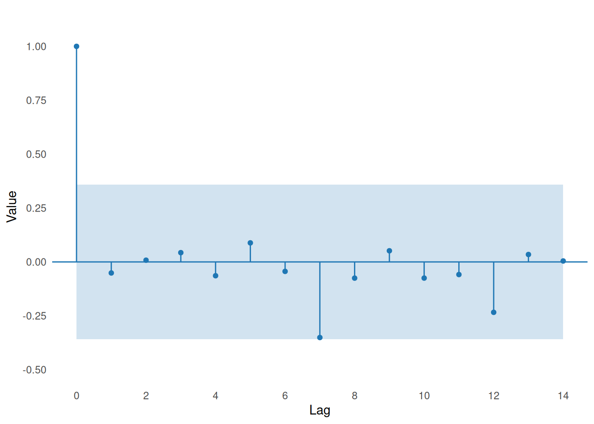
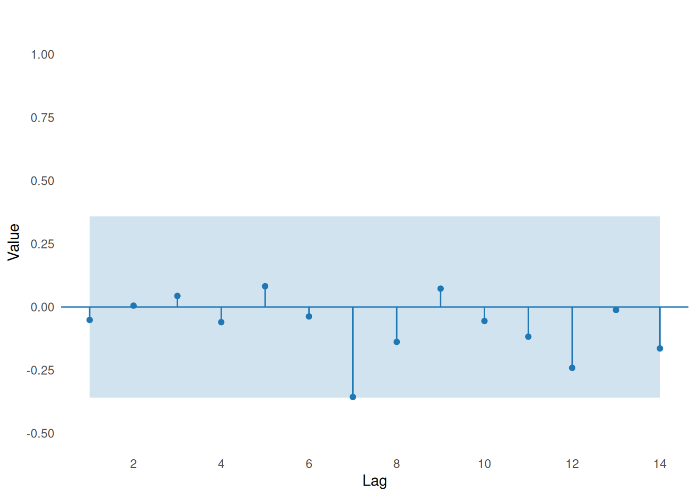
After a difference, neither the ACF (left) nor the PACF (right) show any significant lags (this is the justification of the autogenerated selected model).
Now, we check the ACF and PACF of the second order differences:
The ACF shows a spike at lag 1 that lies outside the confidence boundaries. This behavior is presented too in the PACF plot, but with a negative spike.
We study the best model following the results obtained:
The model with the lowest AIC is an ARIMA(1,1,0), meaning that after a first order difference, the series still depends on the past value.
Series: train_estonia
ARIMA(1,1,0)
Coefficients:
ar1
-0.0498
s.e. 0.1797
sigma^2 = 0.06792: log likelihood = -1.72
AIC=7.44 AICc=7.88 BIC=10.24
Training set error measures:
ME RMSE MAE MPE MAPE MASE
Training set 0.002043961 0.2520665 0.1753975 -0.1361376 4.051654 0.9755127
ACF1
Training set -0.001220662
Now, we need to check the residuals assumptions on both models.
Ljung-Box test
data: Residuals from ARIMA(1,1,0)
Q* = 0.5994, df = 5, p-value = 0.988
Model df: 1. Total lags used: 6
Shapiro-Wilk normality test
data: residuals(fit_arima_estonia_110)
W = 0.94189, p-value = 0.09311
The normality assumption is not guaranteed in the manual fitted model. Neither in the autogenerated one, as seen next:
Ljung-Box test
data: Residuals from ARIMA(0,1,0)
Q* = 0.70501, df = 6, p-value = 0.9944
Model df: 0. Total lags used: 6
Shapiro-Wilk normality test
data: residuals(fit_autoarima_estonia)
W = 0.93813, p-value = 0.07325
We can check the accuracy metric on test data of both models:
At all forecast horizons, both the manual and automated ARIMA models showed a systematic tendency to over-forecast tuberculosis deaths, as indicated by negative mean errors. However, the extent of over-forecasting was slightly greater for the manual model at each step (e.g., ME –3.3 vs –3.1 at h = 1; –13.4 vs –13.1 at h = 5). Despite this, overall forecast accuracy was generally comparable between the two approaches. The manual ARIMA exhibited marginally lower root mean square errors (RMSE) at h = 3 and h = 5 (10.2 vs 10.1; 13.5 vs 13.3, respectively), while absolute errors (MAE) were nearly identical. Percentage errors (MAPE), however, revealed a clear difference: the manual model yielded consistently lower MAPE at each horizon (e.g., 30.6% vs 34.1% at h = 1), suggesting better relative accuracy in proportion to the observed values. Nevertheless, MAPE values above 50% from h = 3 onward highlight the inherent challenge of longer-term TB mortality forecasting, regardless of model selection strategy.
The plots of the results are provided next:
$h1
$h3
$h5
7 ARIMAX models
We have seen that ARIMA models are quite simple in order to do a well-suited forecast for our studied series. In this section we will study ARIMAX models; ARIMAX models are ARIMA models that include some exogenous variables in order to get better forecastings rather than basic ARIMA. In our study, we will consider two exogenous variables: Gross Domestic Product per capita and the country population.
First, we visualize these series.
We begin analysing the Population variable.
In stark contrast with the other countries, Spain population has a strong increasing trend, climbing from around 28 million in 1950 to nearly 48 million by 2020. The Netherlands also grows steadily, from about 10 million to roughly 18 million. Sweden’s population increases more modestly, moving from approximately 7 million to just over 10 million, while Switzerland rises from about 5 million to nearly 9 million over the same period.
In contrast, Bulgaria peaks near 9 million in the 1980s before gradually declining to about 7 million by 2020, and Estonia remains the smallest, hovering around 1.7 million in 1980 but falling slightly to around 1.3 million by 2020. The plot clearly highlights Spain’s large and sustained growth, moderate increases for Northern and Western European countries, and population declines in Eastern Europe.
Now, let’s visualize the GDP per capita tendencies:
Now, the outlook is quite different; Switzerland leads the list, climbing from around $2,000 in 1960 to over $90,000 by 2020, with sharp surges in the late 1990s and post-2005. Following Switzerland, the Netherlands and Sweden follow a similar upward trajectory. Spain increases more modestly, from under $1,000 to a peak of around $35,000 by 2008, then levels out in the $25,000–$30,000 range.Estonia lags until independence—remaining near zero through the Soviet era—then surges after 1992 from around $2,000 to approximately $25,000 by 2020. Bulgaria also starts below $1,000, grows gradually through the 1980s, dips in the 1990s, and then climbs to roughly $12,000 by 2020.
Overall, Switzerland, Sweden, and the Netherlands display long-term, high-income growth; Spain shows moderate growth with a plateau post-2008; and the Eastern European countries (Estonia and Bulgaria) demonstrate rapid catch-up following post-1990 transitions.
Before beginning the ARIMAX section, it is important to give special attention to the length of each of the variables, just to ensure that the studied variable (number_deaths) length coincides with the covariables length.
Now, we need to divide these new series into a training and a testing set. We will do the split, ensuring that the 80% of the data is used for training.
Now that we have prepared the dataset, we can begin the ARIMAX study.
7.1 Spain
We begin studying Spain data. First, let’s plot all three variables (number_deaths, population and gdp_capita) in the same plot.
We need to further analyze the main characteristics of the three series. We begin assessing the stationary condition using the ADF test:
Augmented Dickey-Fuller Test
data: xreg_spain_train$population
Dickey-Fuller = -3.1341, Lag order = 3, p-value = 0.1194
alternative hypothesis: stationary
Augmented Dickey-Fuller Test
data: xreg_spain_train$gdp_capita
Dickey-Fuller = -1.6919, Lag order = 3, p-value = 0.6979
alternative hypothesis: stationary
Neither the population nor the GDP per capita series are stationary.
Augmented Dickey-Fuller Test
data: xreg_spain_train$population %>% diff()
Dickey-Fuller = -2.756, Lag order = 3, p-value = 0.2716
alternative hypothesis: stationary
Augmented Dickey-Fuller Test
data: xreg_spain_train$gdp_capita %>% diff()
Dickey-Fuller = -3.0527, Lag order = 3, p-value = 0.1529
alternative hypothesis: stationary
After a first order difference, series still not stationary. In fact, is not but after three differences that the series get stationary. However, and due to the consequences of high order differences explained in the memory, we are going to analyze both 1 or 2 differences only.
Augmented Dickey-Fuller Test
data: xreg_spain_train$population %>% diff(differences = 3)
Dickey-Fuller = -3.855, Lag order = 3, p-value = 0.02372
alternative hypothesis: stationary
Augmented Dickey-Fuller Test
data: xreg_spain_train$gdp_capita %>% diff()
Dickey-Fuller = -3.0527, Lag order = 3, p-value = 0.1529
alternative hypothesis: stationary
We plot the ACF and PACF of both approaches, of each series.
Population series, first order differences:
Results: The PACF reveals two significant lags at the beginning of the series, with additional spikes at lags 7 and 11. The ACF exhibits a slow decay, suggesting that the series may remain non-stationary after a single differencing.
Population series, two order differences:
Results: The ACF displays prominent spikes at lags 1, 6, and 7. The PACF similarly shows significant spikes at lags 1 and 6, while other lags fall within the confidence bounds. These patterns are more consistent with stationarity.
GDP per capita series, first order differences:
Results: The PACF exhibits significant spikes at lags 1 and 15. The ACF also shows notable autocorrelations at both the first and last lags, suggesting possible seasonality or long-range dependence.
GDP per capita series, two order differences:
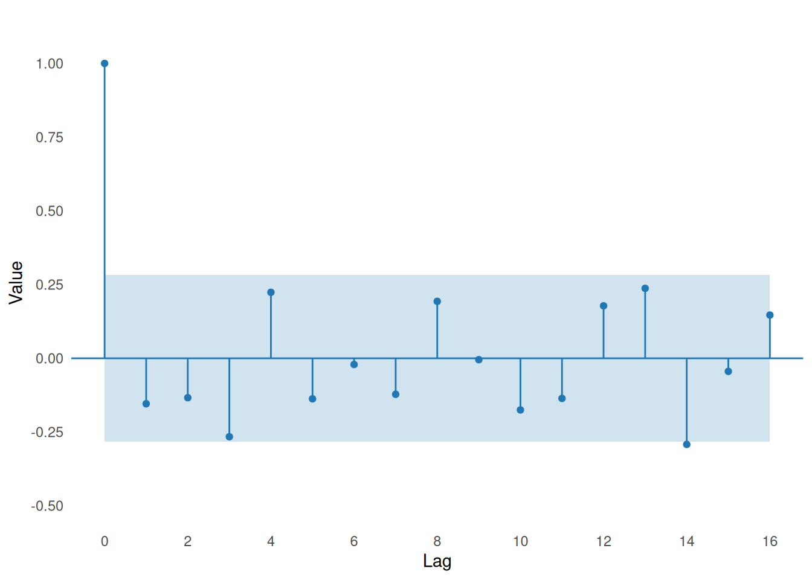
Results: The PACF includes a significant negative spike at lag 3, while the rest remain within the confidence bounds. The ACF shows no significant autocorrelations, indicating that the second-order differencing may have adequately removed autocorrelated structure from the series.
We first study which model recomends the auto.arima function
Series: train_spain_short
Regression with ARIMA(1,1,0) errors
Coefficients:
ar1 drift population gdp_capita
-0.5414 -0.0582 -0.4794 0.0004
s.e. 0.1288 0.0153 1.4948 0.0627
sigma^2 = 0.004452: log likelihood = 65.07
AIC=-120.15 AICc=-118.75 BIC=-110.69
Training set error measures:
ME RMSE MAE MPE MAPE MASE
Training set 0.0005184054 0.06330152 0.05038494 0.03269338 0.7232606 0.6411973
ACF1
Training set -0.01665529
The function suggested an ARIMAX(1,1,0), that presents an AIC of \(-120\). Now, to choose the manual ARIMA, we could try the try_all_arima function and study which model presents better AIC value.
The model selected is an ARIMA(\(1,2,1\)), with an AIC of \(-117.66\). We check the residuals of both models.
Series: train_spain_short
Regression with ARIMA(1,2,1) errors
Coefficients:
ar1 ma1 population gdp_capita
-0.5800 -0.8957 -0.5114 0.0293
s.e. 0.1275 0.0681 1.5937 0.0638
sigma^2 = 0.004565: log likelihood = 61.97
AIC=-113.93 AICc=-112.5 BIC=-104.58
Training set error measures:
ME RMSE MAE MPE MAPE MASE
Training set 0.004438991 0.06337872 0.05050713 0.08319328 0.7237769 0.6427524
ACF1
Training set -0.08255464
Ljung-Box test
data: Residuals from Regression with ARIMA(1,1,0) errors
Q* = 4.1483, df = 9, p-value = 0.9014
Model df: 1. Total lags used: 10
Shapiro-Wilk normality test
data: residuals(fit_auto_arimax_spain)
W = 0.97747, p-value = 0.451
The autogenerated model satisfies the assumption on the residuals.
Ljung-Box test
data: Residuals from Regression with ARIMA(1,2,1) errors
Q* = 4.3106, df = 8, p-value = 0.8281
Model df: 2. Total lags used: 10
Shapiro-Wilk normality test
data: residuals(fit_manual_arimax_spain)
W = 0.99405, p-value = 0.9967
The manual model, too. Now, we check the accuracy measures:
The manually adjusted model consistently outperforms the automatic one across all error metrics and forecast horizons. In particular, the mean error of the automatic model is notably more negative across all horizons, reflecting a severe overestimation bias. For example, at horizon \(h=5\), the automatic model overpredicts by more than 70 deaths on average, while the manual model maintains a considerably smaller bias of approximately \(-7.66\).
Regarding scale-dependent metrics, such as RMSE and MAE, the manual model achieves significantly lower values—especially at \(h=3\) and \(h=5\)—indicating more accurate point forecasts. Similarly, MAPE values show that the relative forecast error of the manual model remains below \(11%\) at all horizons, compared to nearly \(30%\) for the automatic model at \(h=5\).
These results confirm the superiority of the manual ARIMA specification in both accuracy and stability, particularly in medium- and long-term forecasts. Moreover, the progressive deterioration of the automatic model’s accuracy with increasing horizon highlights its limited predictive capacity for multi-step forecasts.
Augmented Dickey-Fuller Test
data: xreg_netherlands_train$population
Dickey-Fuller = -2.975, Lag order = 3, p-value = 0.1824
alternative hypothesis: stationary
Augmented Dickey-Fuller Test
data: xreg_netherlands_train$gdp_capita
Dickey-Fuller = -1.8635, Lag order = 3, p-value = 0.6292
alternative hypothesis: stationary
We apply a first order differences in both series:
Augmented Dickey-Fuller Test
data: xreg_netherlands_train$population %>% diff()
Dickey-Fuller = -2.5873, Lag order = 3, p-value = 0.3387
alternative hypothesis: stationary
Augmented Dickey-Fuller Test
data: xreg_netherlands_train$gdp_capita %>% diff()
Dickey-Fuller = -2.7362, Lag order = 3, p-value = 0.279
alternative hypothesis: stationary
We still not get stationarity. We apply again a difference:
Augmented Dickey-Fuller Test
data: xreg_netherlands_train$population %>% diff(differences = 2)
Dickey-Fuller = -4.1315, Lag order = 3, p-value = 0.01155
alternative hypothesis: stationary
Augmented Dickey-Fuller Test
data: xreg_netherlands_train$gdp_capita %>% diff(differences = 2)
Dickey-Fuller = -3.8721, Lag order = 3, p-value = 0.02247
alternative hypothesis: stationary
We need two differences to get the series stationary. Let’s check now which model selects the auto.arima function
Series: train_netherlands_short
Regression with ARIMA(1,1,2) errors
Coefficients:
ar1 ma1 ma2 population gdp_capita
-0.4747 0.3193 -0.5343 -6.4473 0.2255
s.e. 0.2101 0.2006 0.1247 2.3461 0.1932
sigma^2 = 0.0218: log likelihood = 27.17
AIC=-42.34 AICc=-40.39 BIC=-30.87
Training set error measures:
ME RMSE MAE MPE MAPE MASE
Training set -0.005124349 0.1387012 0.1069655 -0.2267392 2.207524 0.8398958
ACF1
Training set -0.01441583
The selected model is ARIMA(\(1,1,2\)), meaning that after a first order difference, the series still has an autorregressive and moving average components. Now, for the manual model, we should check the ACF and PACF plots. We will study the twice-differenced series.
We begin with the population series
The ACF (first) shows significant spikes at lags one and three, whereas the PACF (second) displays two significant first lags. We continue woth the GDP per capita series:
GDP per capita series show a different pattern; the PACF (bottom) displays two significant spikes at lags 2 and 3, whereas the ACF (top) presents an only spike at lag 4.
Overall, an ARIMA(\(2,2,1\)) is selected.
Series: train_netherlands_short
Regression with ARIMA(2,2,1) errors
Coefficients:
ar1 ar2 ma1 population gdp_capita
-0.2676 -0.4200 -1.0000 -2.1920 0.1885
s.e. 0.1288 0.1292 0.1235 4.1533 0.1768
sigma^2 = 0.02299: log likelihood = 22.94
AIC=-33.89 AICc=-31.89 BIC=-22.54
Training set error measures:
ME RMSE MAE MPE MAPE MASE
Training set 0.004429497 0.1408256 0.1087181 -0.01153454 2.249443 0.8536576
ACF1
Training set 0.03703676
It gives an AIC of \(-33.89\). Now, we check the residuals of both models. We begin with the auto.arima model:
Ljung-Box test
data: Residuals from Regression with ARIMA(1,1,2) errors
Q* = 3.7468, df = 7, p-value = 0.8084
Model df: 3. Total lags used: 10
Shapiro-Wilk normality test
data: residuals(fit_auto_arimax_netherlands)
W = 0.98069, p-value = 0.5686
The automated model satisfy both assumptions on residuals. We now check the manual model:
Ljung-Box test
data: Residuals from Regression with ARIMA(2,2,1) errors
Q* = 4.5198, df = 7, p-value = 0.7183
Model df: 3. Total lags used: 10
Shapiro-Wilk normality test
data: residuals(fit_arimax_netherlands_221)
W = 0.97759, p-value = 0.4423
Residual diagnostic of the manual model determines a well-fitted model, too. We begin the forecast step:
Now, we study the Bulgarian time series. We begin, as in Spain, by studying the regressor variables.
The autogenerated model is:
Series: train_bulgaria_short
Regression with ARIMA(0,1,0) errors
Coefficients:
population gdp_capita
0.8672 -0.0987
s.e. 2.2176 0.0761
sigma^2 = 0.01041: log likelihood = 29.53
AIC=-53.06 AICc=-52.23 BIC=-48.57
Training set error measures:
ME RMSE MAE MPE MAPE MASE
Training set -0.01640574 0.09742935 0.07310608 -0.3234561 1.314246 0.9224738
ACF1
Training set 0.09458781
ARIMA(0,1,0) with an AIC of \(-53.06\). We check the characteristics of the series in order to determine the alternative model. We begin assessing the stationary condition using the ADF test:
Augmented Dickey-Fuller Test
data: xreg_bulgaria_train$population
Dickey-Fuller = -3.5556, Lag order = 3, p-value = 0.05179
alternative hypothesis: stationary
Augmented Dickey-Fuller Test
data: xreg_bulgaria_train$gdp_capita
Dickey-Fuller = -1.6692, Lag order = 3, p-value = 0.7012
alternative hypothesis: stationary
Neither the population nor the GDP per capita series are stationary.
Augmented Dickey-Fuller Test
data: xreg_bulgaria_train$population %>% diff()
Dickey-Fuller = -2.0279, Lag order = 3, p-value = 0.5621
alternative hypothesis: stationary
Augmented Dickey-Fuller Test
data: xreg_bulgaria_train$gdp_capita %>% diff()
Dickey-Fuller = -3.2993, Lag order = 3, p-value = 0.08909
alternative hypothesis: stationary
After a first order difference, series still not stationary. In fact, is not but after two differences that the series get stationary. We study both analysis to choose whether adding an order of differences ensures a better perfomance of the model rather than only one difference.
Augmented Dickey-Fuller Test
data: xreg_bulgaria_train$population %>% diff(differences = 2)
Dickey-Fuller = -4.2078, Lag order = 3, p-value = 0.01427
alternative hypothesis: stationary
Augmented Dickey-Fuller Test
data: xreg_bulgaria_train$gdp_capita %>% diff(differences = 2)
Dickey-Fuller = -4.0679, Lag order = 3, p-value = 0.01938
alternative hypothesis: stationary
Population series, first order differences:
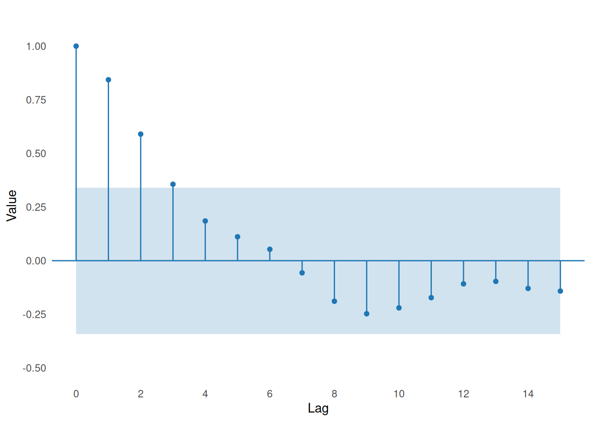
Results: The PACF reveals two significant lags at the beginning of the series. The ACF exhibits a slow decay, suggesting that the series may remain non-stationary after a single differencing, as we proved by the ADF test.
Population series, two order differences:
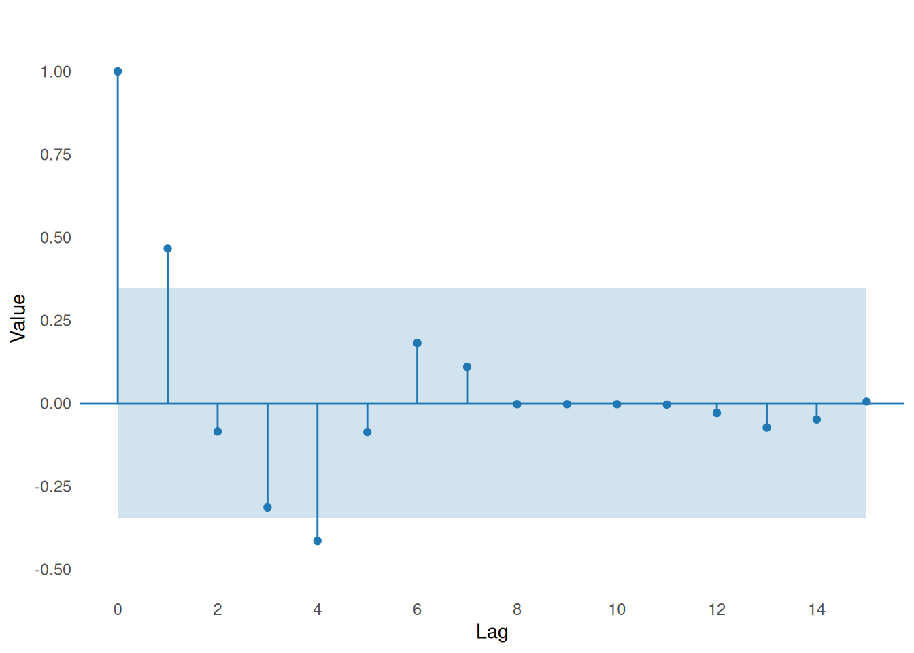
Results: The ACF displays prominent spikes at lags 1, and 4. The PACF similarly shows significant spikes at the first two lags, while other lags fall within the confidence bounds. These patterns are more consistent with stationarity.
GDP per capita series, first order differences:
Results: The PACF does not show any significant lags rather than at 4th lag. The ACF also shows notable autocorrelations in the first lag.
GDP per capita series, two order differences:
Results: The ACF (left) shows oscillating lags, with many significant spikes at lags 1,3,4,7. The PACF includes significant negative spikes at lags 1 and 2, while the rest remain within the confidence bounds.
Overall, the model proposed is an ARIMA(2,1,2).
Series: train_bulgaria_short
Regression with ARIMA(2,1,2) errors
Coefficients:
ar1 ar2 ma1 ma2 population gdp_capita
1.1918 -0.6548 -1.3169 1.0000 2.1299 -0.0578
s.e. 0.2051 0.1658 0.1282 0.1316 2.5781 0.0669
sigma^2 = 0.009403: log likelihood = 31.87
AIC=-49.73 AICc=-45.25 BIC=-39.26
Training set error measures:
ME RMSE MAE MPE MAPE MASE
Training set -0.006632323 0.08641027 0.06451438 -0.1321055 1.159577 0.8140613
ACF1
Training set 0.07762126
The model’s AIC is nearly \(-49.8\), a bit bigger than the autogenerated one, but with no big differences. Noe its time of residuals diagnostic.
We first check the automated one:
Ljung-Box test
data: Residuals from Regression with ARIMA(0,1,0) errors
Q* = 5.5106, df = 7, p-value = 0.5979
Model df: 0. Total lags used: 7
Shapiro-Wilk normality test
data: residuals(fit_arimax_bulgaria)
W = 0.98179, p-value = 0.8272
The residuals of the ARIMAX model satisfy both normality and non autocorrelation hypothesis. We check the manual model:
Ljung-Box test
data: Residuals from Regression with ARIMA(2,1,2) errors
Q* = 5.3595, df = 3, p-value = 0.1473
Model df: 4. Total lags used: 7
Shapiro-Wilk normality test
data: residuals(fit_arimax_bulgaria_212)
W = 0.97532, p-value = 0.6217
Residuals satisfy the assumptions. We then compare the accuracy metrics on both models:
Across all forecast horizons, the manually specified ARIMA model showed smaller errors and less systematic bias than the models selected automatically by the auto.arima() procedure. Negative mean error values in every model indicate a tendency to under-forecast tuberculosis deaths, but the magnitude of this bias was consistently lower for the manual models. Forecast dispersion increased with horizon, as expected, yet the manual ARIMA retained lower RMSE and MAE at each step. Critically, percentage-scaled accuracy (MAPE) remained < 20 % for the manual model up to three steps ahead (15.3 % → 19.1 %), whereas the automated model crossed widely used acceptability thresholds (15.4 % → 27.2 % → 49.4 %).
We finally check the plots of the results:
$h1
$h3
$h5
Notably, as the horizon increases, the predictions do not fit well with the observed values; however, and markedly enough, at three-step-ahead forecast, the manual model has capture the spike in 2019 quite good, even better than the one-step-ahead forecast.
7.4 Estonia
Let’s begin the study for Estonia data. Remember that Estonia is the country that has shorter time series.
[1] 24
[1] 6
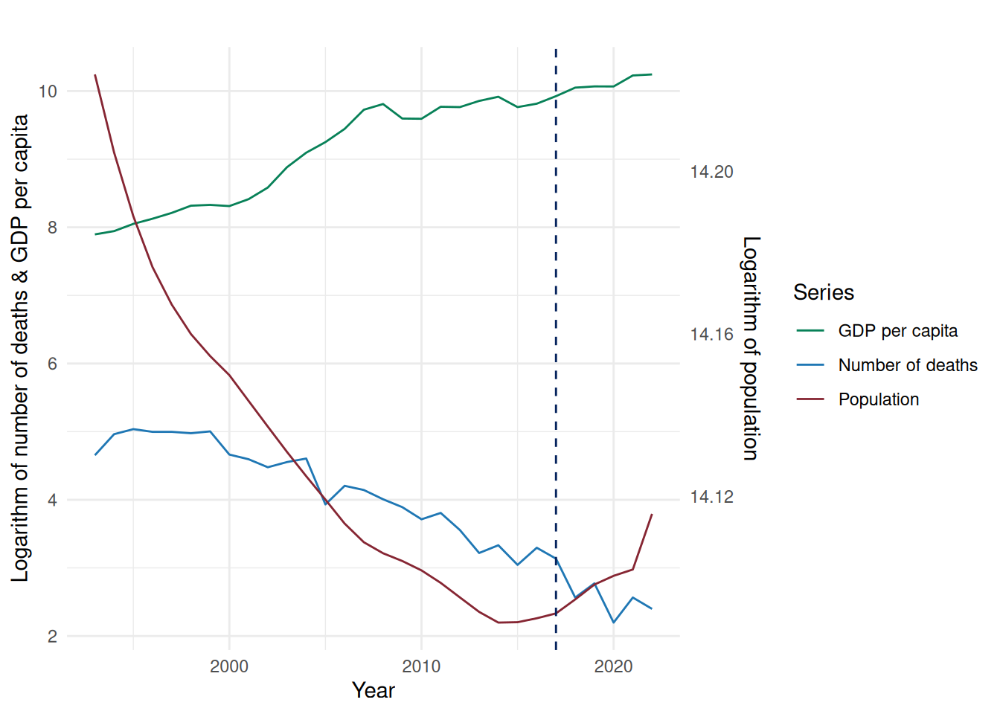
It is clear that the series are not stationary. To further asses this, we use the ADF test:
Augmented Dickey-Fuller Test
data: xreg_estonia_train$population
Dickey-Fuller = -0.93117, Lag order = 2, p-value = 0.9307
alternative hypothesis: stationary
Augmented Dickey-Fuller Test
data: xreg_estonia_train$gdp_capita
Dickey-Fuller = -1.0589, Lag order = 2, p-value = 0.9119
alternative hypothesis: stationary
We try the first differences:
Augmented Dickey-Fuller Test
data: xreg_estonia_train$population %>% diff()
Dickey-Fuller = -4.1139, Lag order = 2, p-value = 0.01928
alternative hypothesis: stationary
Augmented Dickey-Fuller Test
data: xreg_estonia_train$gdp_capita %>% diff()
Dickey-Fuller = -1.8177, Lag order = 2, p-value = 0.6418
alternative hypothesis: stationary
The population time series passes the stationarity test after a first difference being applied. In contrast, the GDP per capita time series need more than two differences to get stationary.
We check the first-order difference ACF and PACF plots:
The results of the population’s ACF and PACF plots suggest an AR(1) behaviour. We now check the GDP per capita time series:
No signficant spikes are shown in the ACF and PACF plots. Let’s investigate which is the selected ARIMA model of the auto.arima function:
Series: train_estonia_short
Regression with ARIMA(1,1,0) errors
Coefficients:
ar1 drift population gdp_capita
-0.5061 -0.1561 -13.4526 0.1165
s.e. 0.2008 0.0374 9.3304 0.4341
sigma^2 = 0.0421: log likelihood = 6.4
AIC=-2.81 AICc=0.72 BIC=2.87
Training set error measures:
ME RMSE MAE MPE MAPE MASE
Training set 0.01121661 0.1825569 0.1313415 0.2037424 3.266069 0.7754926
ACF1
Training set -0.07426875
The auto.arima has selected the ARIMA(1,1,0) as the model with the AIC coefficient minimized (\(-2.81\)). This selection fully coincides with the results of the ACF and PACF, so we need to investigate a bit more to choose an alternative model.
Recall that Estonia’s TB-deaths series was not stationary after two differences being applied. We can study the ACF and PACF of the covariates after two differences.
First, the populations series:
Then, the GDP per capita time series:
We propose an ARIMA(1,2,2) and check the results. First, the AIC returned is:
Series: train_estonia_short
Regression with ARIMA(1,2,2) errors
Coefficients:
ar1 ma1 ma2 population gdp_capita
-0.1866 -1.9709 0.9996 -13.8269 -0.1731
s.e. 0.2426 0.2044 0.2038 2.5278 0.1225
sigma^2 = 0.03162: log likelihood = 6.85
AIC=-1.71 AICc=3.89 BIC=4.84
Training set error measures:
ME RMSE MAE MPE MAPE MASE
Training set -0.02505566 0.1496641 0.1208129 -0.5381029 2.958211 0.7133276
ACF1
Training set -0.09727469
We check the residuals of both models.
Ljung-Box test
data: Residuals from Regression with ARIMA(1,1,0) errors
Q* = 4.2723, df = 4, p-value = 0.3704
Model df: 1. Total lags used: 5
Shapiro-Wilk normality test
data: residuals(fit_autoarimax_estonia)
W = 0.91241, p-value = 0.0398
The residuals of the automated model do not satisfy the normality assumption.
Ljung-Box test
data: Residuals from Regression with ARIMA(1,2,2) errors
Q* = 4.5637, df = 3, p-value = 0.2067
Model df: 3. Total lags used: 6
Shapiro-Wilk normality test
data: residuals(fit_arimax_estonia_122)
W = 0.98869, p-value = 0.9922
In contrast, the manually selected model satisfy both hypothesis. We can check the accuracy metrics of both models:
Augmented Dickey-Fuller Test
data: xreg_sweden_train$population
Dickey-Fuller = -4.942, Lag order = 3, p-value = 0.01
alternative hypothesis: stationary
Augmented Dickey-Fuller Test
data: xreg_sweden_train$gdp_capita %>% diff(differences = 2)
Dickey-Fuller = -3.9517, Lag order = 3, p-value = 0.01912
alternative hypothesis: stationary
The GDP per capita series need to order differences to get stationary; on the contrary, the population series seems to be stationary without any difference. The KPPS test reveals that it is not stationary:
KPSS Test for Level Stationarity
data: xreg_sweden_train$population
KPSS Level = 1.3466, Truncation lag parameter = 3, p-value = 0.01
Now, we check the ACF and PACF of both first and two differences:
First difference of population series
It is clear that the series is not stationary, and the slow decay of the ACF confirms the hypothesis.
Second difference of population series
After two differences, the ACF (top) shows a significant spike at the first lag, whereas the PACF (bottom) displays three signficant spikes at the first three lags.
First difference of population series
No autocorrelation is shown in the ACF (top) and in the PACF (bottom) only at lag 5.
Second difference of population series
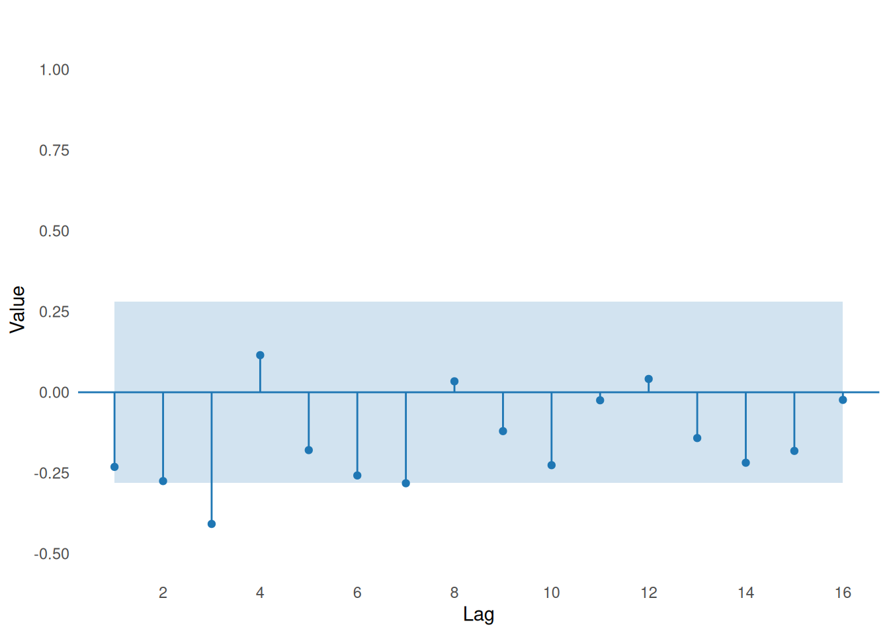
The ACF (top) displays significant spikes at lags 4, 8 and 16, whereas the PACF (bottom) displays an only significant spike at lag 3.
Overall, the manual selected model is ARIMA(\(2,1,2\)).
Series: train_sweden_short
Regression with ARIMA(2,1,2) errors
Coefficients:
ar1 ar2 ma1 ma2 population gdp_capita
-0.4220 -0.9131 0.3112 0.7891 -6.7746 -0.0901
s.e. 0.1763 0.1261 0.2208 0.1957 4.6835 0.2063
sigma^2 = 0.03126: log likelihood = 18.83
AIC=-23.66 AICc=-20.99 BIC=-10.27
Training set error measures:
ME RMSE MAE MPE MAPE MASE
Training set -0.01904322 0.1642148 0.1223558 -0.5045827 2.588142 0.9522946
ACF1
Training set -0.06876438
Now, we check the auto.arima function selected model:
Series: train_sweden_short
Regression with ARIMA(2,1,0) errors
Coefficients:
ar1 ar2 drift population gdp_capita
-0.3742 -0.2828 -0.0920 7.8018 0.0794
s.e. 0.1594 0.1574 0.0552 9.0284 0.2616
sigma^2 = 0.02865: log likelihood = 20.64
AIC=-29.28 AICc=-27.33 BIC=-17.81
Training set error measures:
ME RMSE MAE MPE MAPE MASE
Training set -0.004061642 0.1590008 0.1240047 -0.1744745 2.628186 0.9651276
ACF1
Training set -0.02919613
The model selected is ARIMA(\(2,1,0\)). Now we check the residuals of both models. We begin with the automatic model:
Ljung-Box test
data: Residuals from Regression with ARIMA(2,1,0) errors
Q* = 7.9121, df = 8, p-value = 0.4421
Model df: 2. Total lags used: 10
Shapiro-Wilk normality test
data: residuals(fit_arimax_sweden_auto)
W = 0.96504, p-value = 0.1368
The residuals of the auto.arima model satisfy both assumptions. Now, we check the residuals of the ARIMA(\(1,2,2\)):
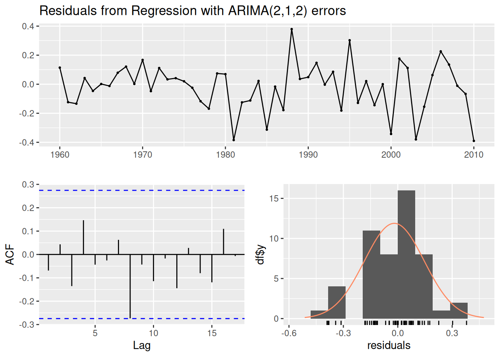
Ljung-Box test
data: Residuals from Regression with ARIMA(2,1,2) errors
Q* = 8.6978, df = 6, p-value = 0.1913
Model df: 4. Total lags used: 10
Shapiro-Wilk normality test
data: residuals(fit_arimax_sweden_212)
W = 0.9628, p-value = 0.1098
The residuals of the ARIMAX model satisfy the assumptions. Now, we begin the forecast:
Augmented Dickey-Fuller Test
data: xreg_switzerland_train$population
Dickey-Fuller = -2.8213, Lag order = 3, p-value = 0.2448
alternative hypothesis: stationary
Augmented Dickey-Fuller Test
data: xreg_switzerland_train$gdp_capita
Dickey-Fuller = -1.1687, Lag order = 3, p-value = 0.903
alternative hypothesis: stationary
The series are clearly non-stationary. We apply a first order differences:
Augmented Dickey-Fuller Test
data: xreg_switzerland_train$population %>% diff()
Dickey-Fuller = -2.5748, Lag order = 3, p-value = 0.3442
alternative hypothesis: stationary
Augmented Dickey-Fuller Test
data: xreg_switzerland_train$gdp_capita %>% diff()
Dickey-Fuller = -2.7258, Lag order = 3, p-value = 0.2837
alternative hypothesis: stationary
We apply a second order differences:
Augmented Dickey-Fuller Test
data: xreg_switzerland_train$population %>% diff(differences = 2)
Dickey-Fuller = -3.7731, Lag order = 3, p-value = 0.02867
alternative hypothesis: stationary
Augmented Dickey-Fuller Test
data: xreg_switzerland_train$gdp_capita %>% diff(differences = 2)
Dickey-Fuller = -4.349, Lag order = 3, p-value = 0.01
alternative hypothesis: stationary
The series get stationary after two differences. We check the auto.arima suggested model:
Series: train_switzerland_short
Regression with ARIMA(1,0,0) errors
Coefficients:
ar1 intercept population gdp_capita
0.8137 111.4201 -6.6318 -0.2545
s.e. 0.1158 30.9481 2.0773 0.2098
sigma^2 = 0.02836: log likelihood = 19.67
AIC=-29.33 AICc=-27.97 BIC=-19.77
Training set error measures:
ME RMSE MAE MPE MAPE MASE
Training set 0.006919642 0.1615247 0.1264871 -0.1039094 2.763029 1.017363
ACF1
Training set -0.0003515405
The procedure suggested an ARIMA(\(1,0,0\)), meaning no differences are applied (recall that the ADF test of the main series show that the series is stationary without any differences).
Now, let’s check the ACF and PACF plots of the covariates after one and two differences:
First difference of population series
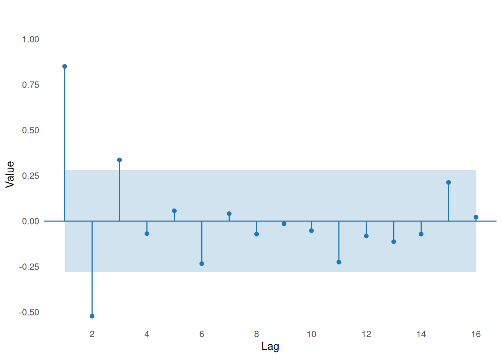
It is clear that the series is not stationary, and the slow decay of the ACF confirms the hypothesis.
Second difference of population series
After two differences, the ACF (top) shows a significant spike at the first lag, whereas the PACF (bottom) displays two signficant spikes at the first two lags.
First difference of population series
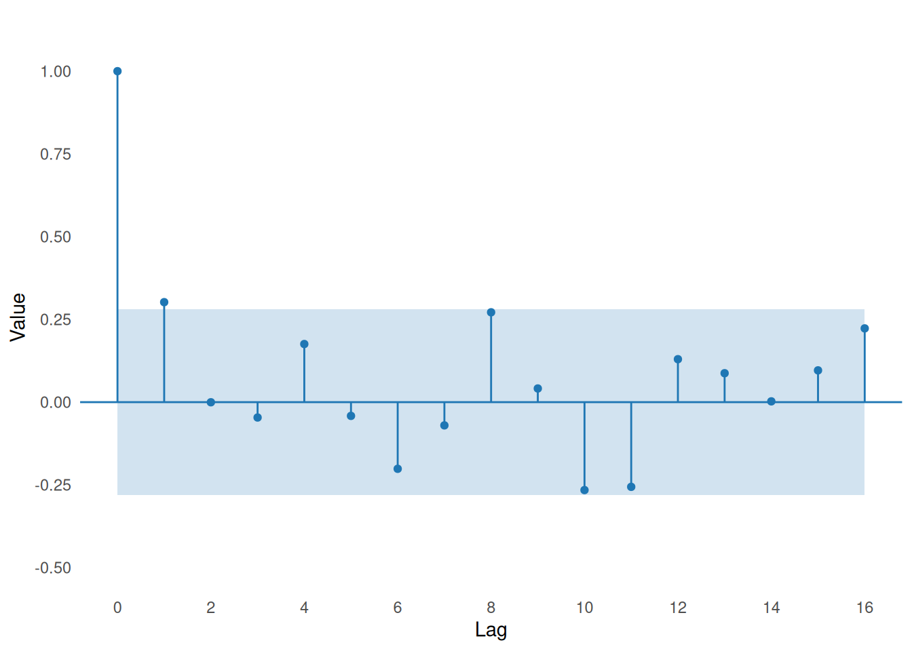
No autocorrelation is shown in the PACF (bottom) and in the ACF (top) only at lag 1.
Second difference of population series
The ACF (top) shows significant spikes at lags 4 and 8, whereas the PACF shows negative spikes at lags 2 and 7. Overall, the fitted model is ARIMA(\(2,2,1\)).
Series: train_switzerland_short
Regression with ARIMA(2,2,1) errors
Coefficients:
ar1 ar2 ma1 population gdp_capita
-0.1512 -0.0977 -1.0000 3.5259 0.168
s.e. 0.1517 0.1469 0.0603 3.2656 0.211
sigma^2 = 0.02556: log likelihood = 20.46
AIC=-28.91 AICc=-26.87 BIC=-17.69
Training set error measures:
ME RMSE MAE MPE MAPE MASE
Training set 0.01257164 0.1482632 0.1081355 0.2099184 2.453913 0.8697569
ACF1
Training set -0.0347773
Now, we check the residuals of both models:
Ljung-Box test
data: Residuals from Regression with ARIMA(1,0,0) errors
Q* = 5.3586, df = 9, p-value = 0.802
Model df: 1. Total lags used: 10
Shapiro-Wilk normality test
data: residuals(fit_autoarimax_switzerland)
W = 0.95885, p-value = 0.07958
The residuals of the auto.arima ARIMAX model do not satisfy the normality hypothesis. Now we check the ARIMA(2,2,1):
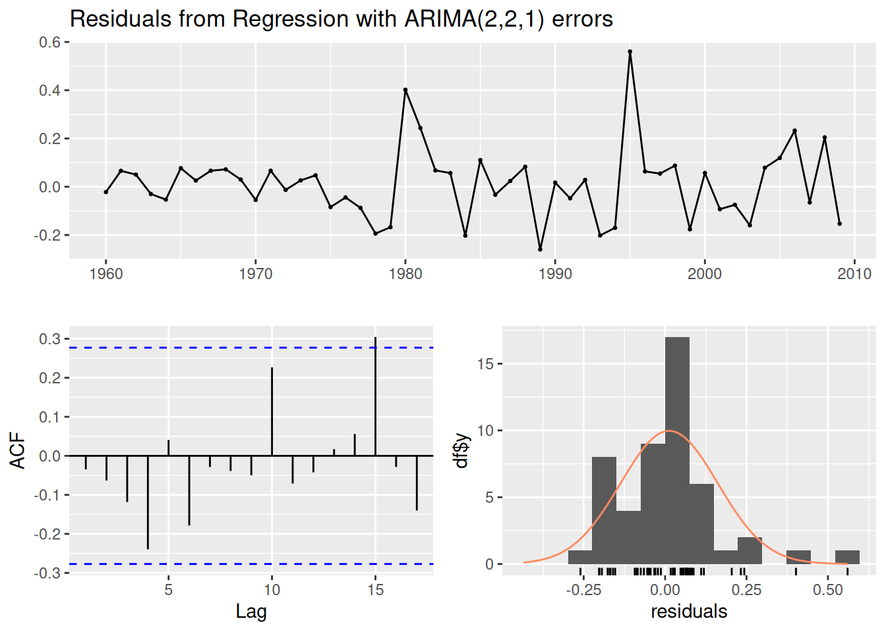
Ljung-Box test
data: Residuals from Regression with ARIMA(2,2,1) errors
Q* = 9.9178, df = 7, p-value = 0.1933
Model df: 3. Total lags used: 10
Shapiro-Wilk normality test
data: residuals(fit_arimax_switzerland_221)
W = 0.9113, p-value = 0.00116
The residuals of the manual model do not distribute normally neither. Now we begin the forecast step: